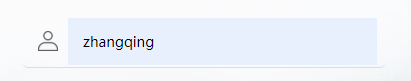
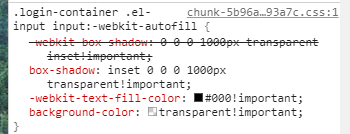
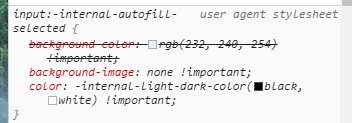

问题背景
在日常网页开发中，input 被大量使用，往往 input 会被赋予很多自定义的 css。在一次登录页面的开发中，开启了 input 的 autocomplete 的属性，发现自定义的背景色样式被浏览器样式覆盖。
奇怪的点在于，调试工具中显示浏览器样式已经被自定义样式覆盖。可实际上页面仍然显示了浏览器的样式。



解决方案查询
在查阅了相关问题后，网络上的很多解决方案是用 box-shadow 来遮盖 background，但这并不能实现我的需求，当前使用场景 input 需要带有透明度。
另一种粗暴的做法是autocomplete="off"，该方案也不是很理想。
最终的解决方案
利用 background-clip 属性把背景色裁减掉。首先设置background-clip:content-box,裁减掉 padding 部分的背景色。
然后设置height:0,这样背景就完全消失了。